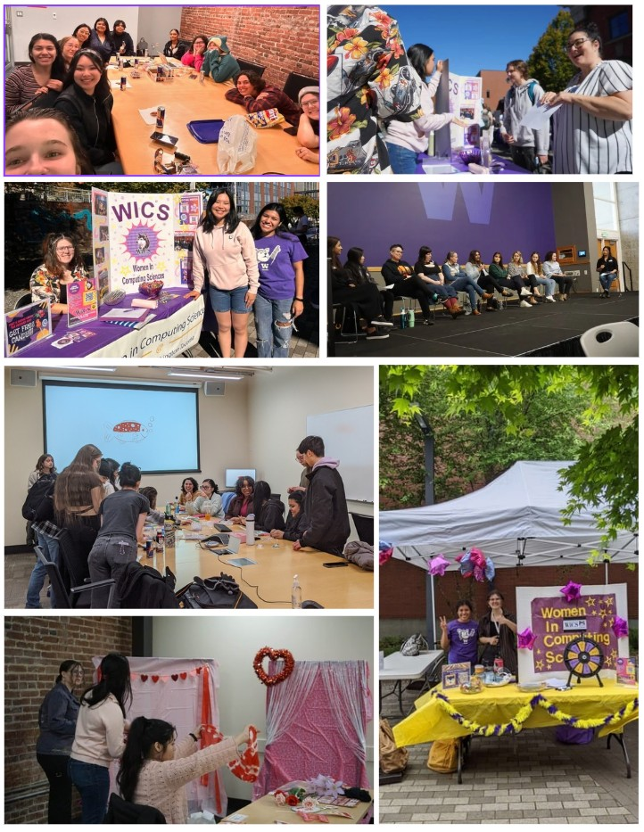

I served as President of the Women in Computing Science (WiCS) organization, where I rebuilt and led a fun, inclusive,
and academic club that I wished had existed when I was a freshman. With no prior leadership experience, I reestablished
club operations by updating and reviewing past documentation, coordinating with advisors, organizing campus involvement events,
and working with my officer team to plan engaging quarterly schedules. We hosted a wide range of social and creative events
and later expanded into academically focused programming through collaborations with other organizations. This experience
strengthened my leadership, communicative and event planning skills and helped me build lasting connections.
Link to WiCS Instagram Page